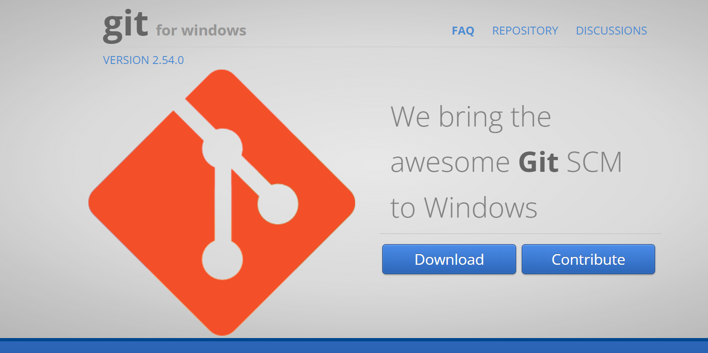

GitHub のセットアップ
Aurora の開発で GitHub を使うための準備をまとめます。
Git と GitHub について
Git とは
Git は、ファイルの変更履歴を管理するためのツールです。
いつ、誰が、どのファイルを変更したのかを記録できます。
GitHub とは
GitHub は、Git で管理している内容をインターネット上で保存・共有できるサービスです。
チームでコードやドキュメントを共有したり、レビューしたりするときに使います。
やること
- GitHub アカウントを作成する
- Git をインストールする
- Git のユーザー名とメールアドレスを設定する
- SSH キーを作成する
- GitHub に SSH キーを登録する
- 接続確認を行う
GitHub アカウントを作成する
GitHub 公式サイト にアクセスして、アカウントを作成します。
登録時に必要なものは以下です。
- ユーザー名
- メールアドレス
- パスワード
登録後、メールアドレスの認証が必要な場合は、届いたメールから認証を完了してください。
Git をインストールする
Git for Windows 公式サイト にアクセスします。

Download ボタンを押して、インストーラーをダウンロードします。
基本的には、インストーラーの初期設定のまま進めれば大丈夫です。
インストール後、コマンドプロンプトまたは PowerShell で以下を実行します。
git --version
Git のバージョンが表示されれば、インストールは成功です。
Git のユーザー設定
Git でコミットしたときに表示される名前とメールアドレスを設定します。
git config --global user.name "Your Name"
git config --global user.email "your-email@example.com"
設定できたか確認します。
git config --global user.name
git config --global user.email
SSH キーを作成する
GitHub と安全に接続するために SSH キーを作成します。
ssh-keygen -t ed25519 -C "your-email@example.com"
途中で保存先やパスフレーズを聞かれます。
よく分からない場合は、保存先は Enter で進めて問題ありません。
公開鍵の内容を表示します。
type %USERPROFILE%\.ssh\id_ed25519.pub
表示された内容をコピーして、GitHub に登録します。
GitHub に SSH キーを登録する
GitHub の画面で以下の順に進みます。
- 右上のアイコンをクリックする
Settingsを開くSSH and GPG keysを開くNew SSH keyをクリックするTitleに分かりやすい名前を入力するKeyに公開鍵を貼り付けるAdd SSH keyをクリックする
接続確認
以下のコマンドで、GitHub に接続できるか確認します。
ssh -T git@github.com
初回は接続してよいか確認されることがあります。
yes と入力して進めてください。
成功すると、GitHub への接続確認メッセージが表示されます。